Character animation
News Animation — Stylised Broadcast Characters
A news broadcast with a cast of stylised characters. Faces are Metahumans driven by video mocap, the garments are built in Marvelous Designer and simulated with Chaos Cloth, and the whole thing is lit, staged and cut in Unreal Engine.
The work
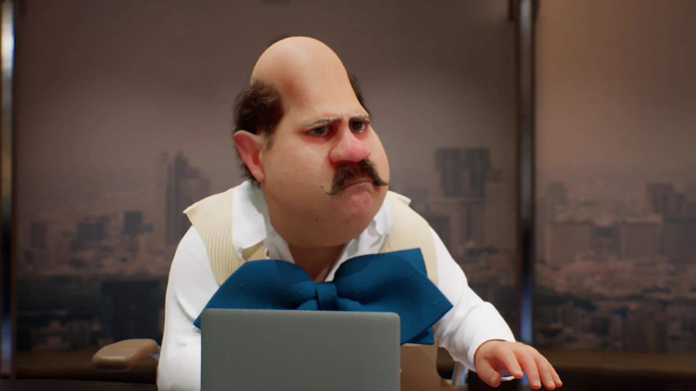
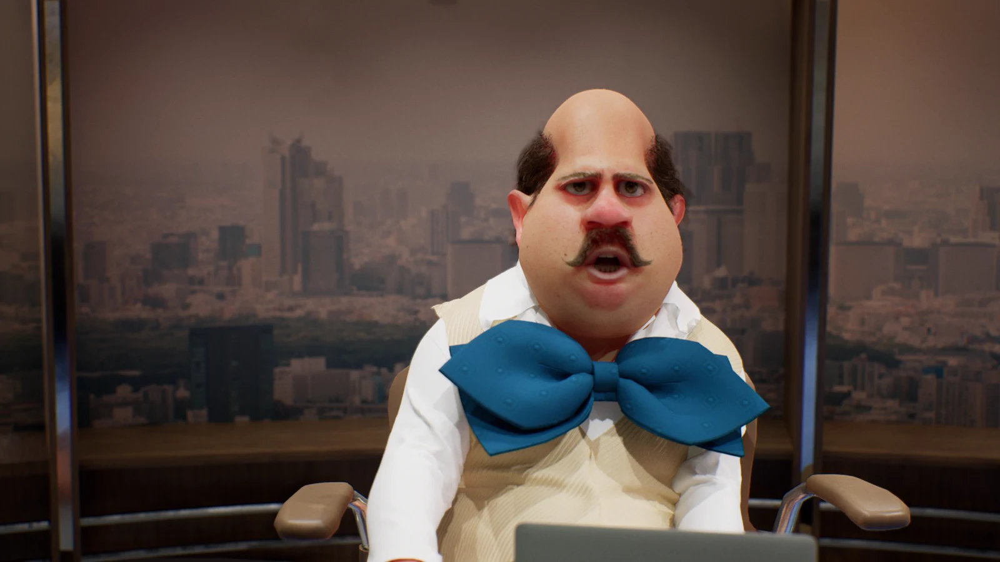
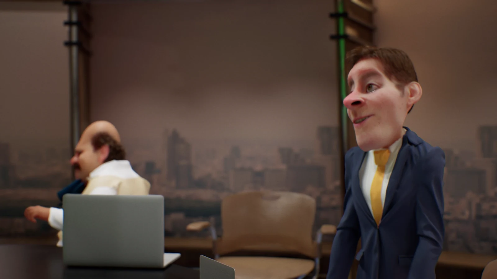
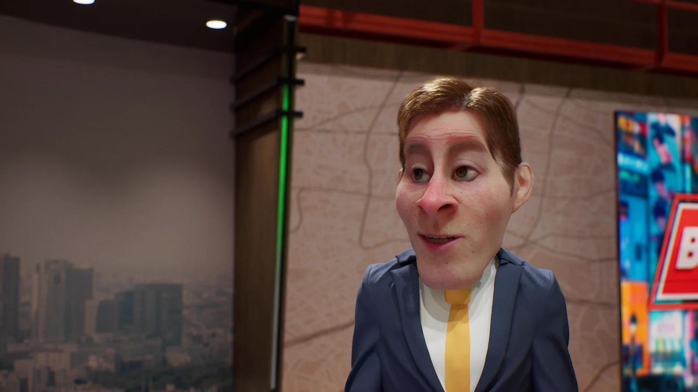
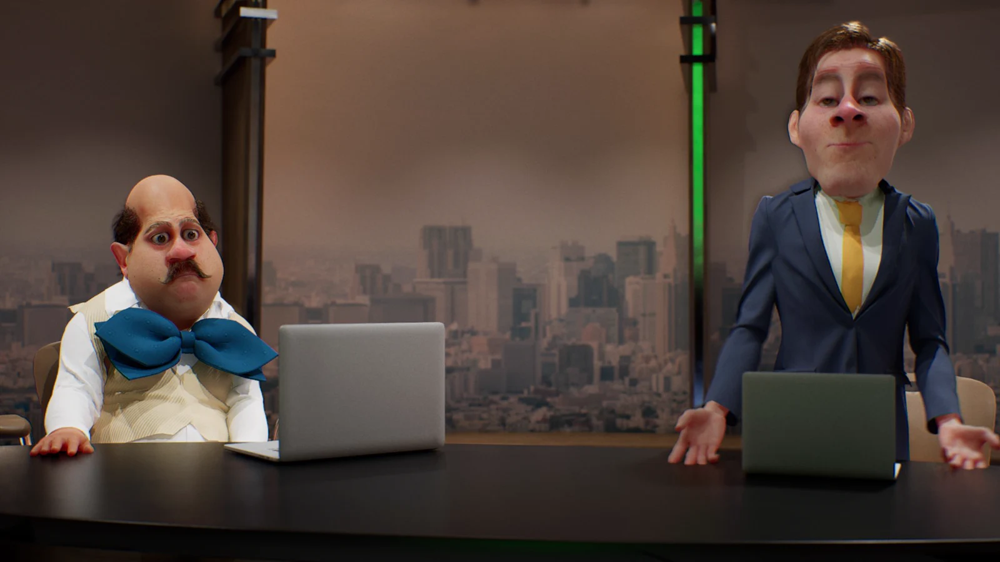
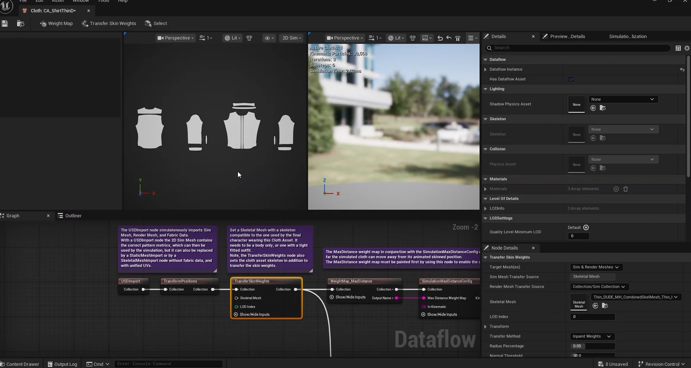
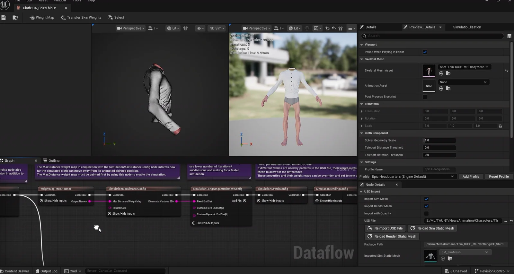
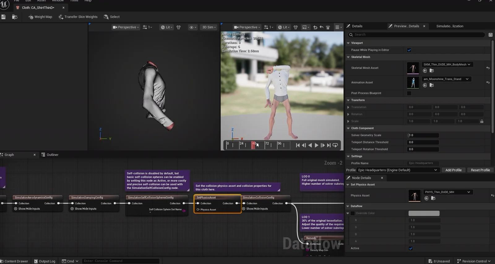
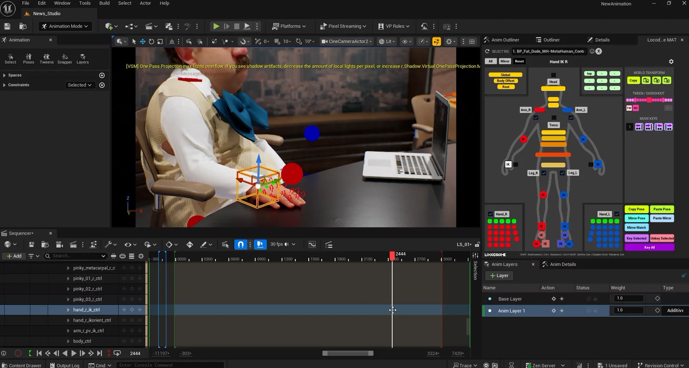
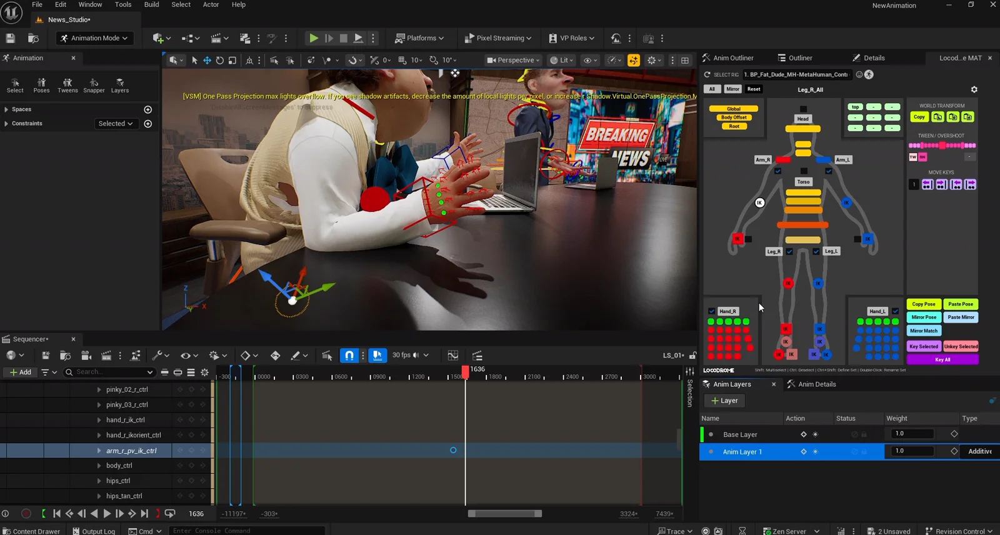
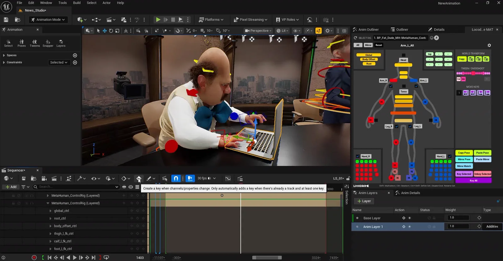
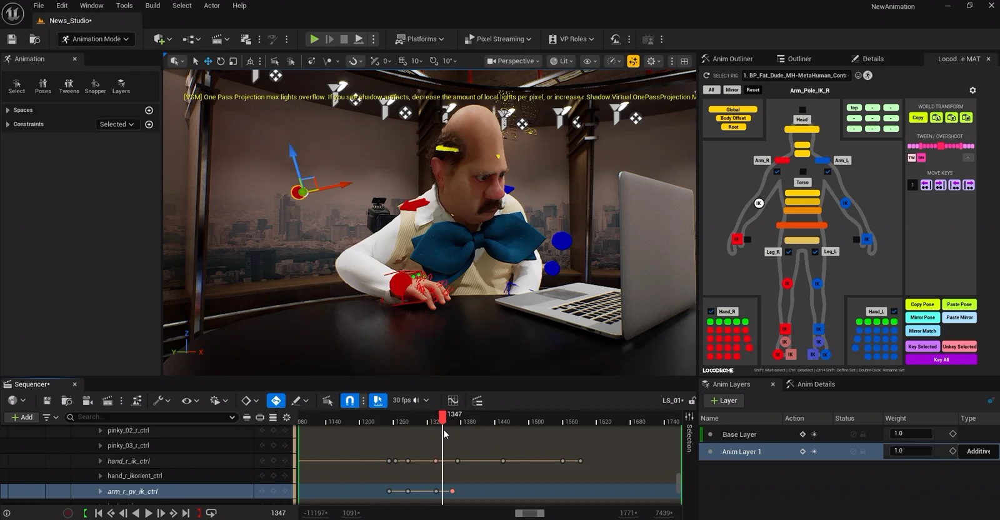
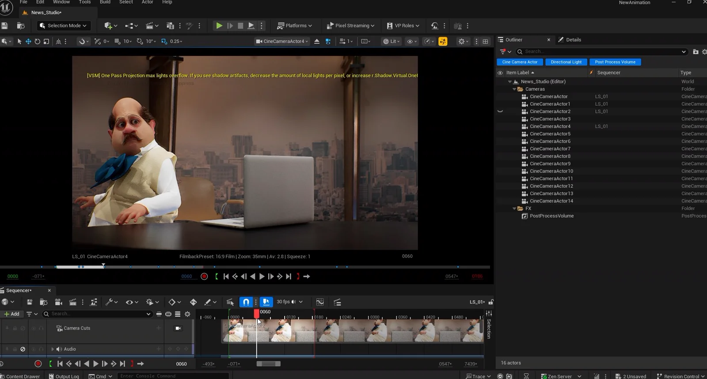
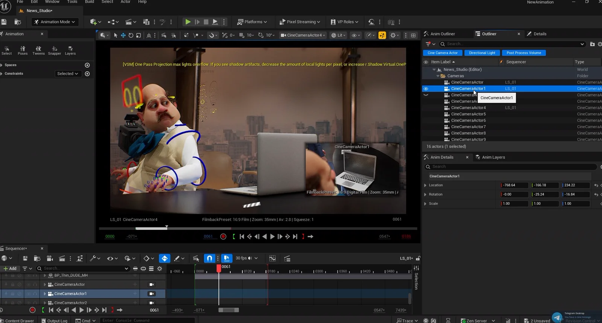
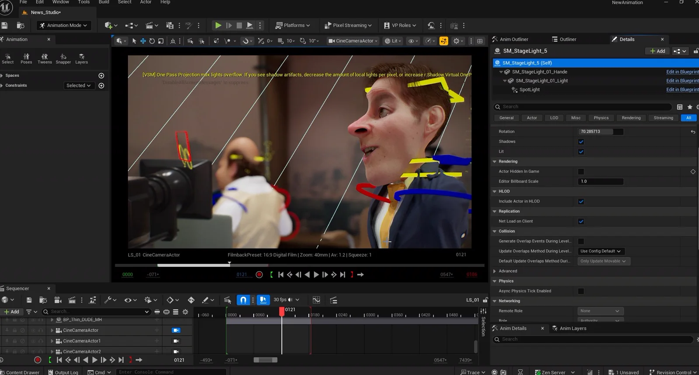
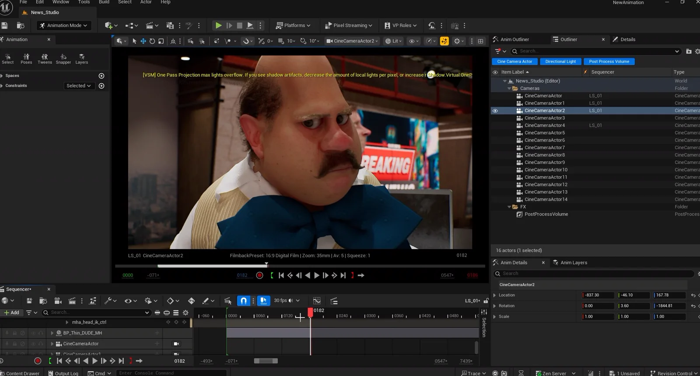
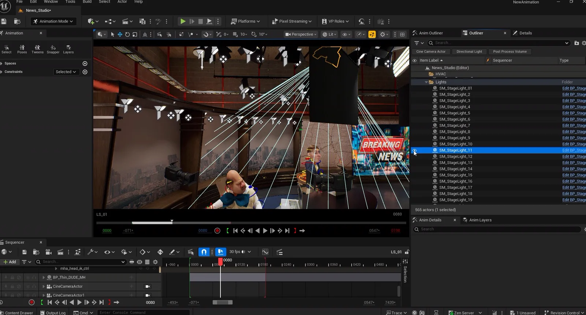
Clips
Under the hood
Two anchors, a studio set and a run of shots — built from Metahuman bases, then pushed away from photorealism into caricature. The faces come from video performance, the suits from Marvelous Designer, and the cloth sim runs in engine so it can be re-timed while the shot is being cut.